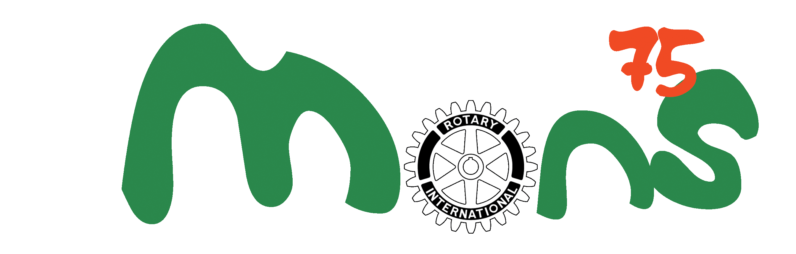

Nos Actions
Nous désirons apporter notre soutien aux communautés locales défavorisées, avec un accent particulier sur les jeunes, mais aussi à des situations critiques à l'étranger, notamment dans des pays d'Asie, Afrique ou Amérique latine. Nous reprenons ci-dessous quelques actions récentes.
La Fondation Rotary est également très connue pour sa lutte contre la polio, qui a abouti à sa quasi-éradication.
En savoir plus
Prévention et traitement des maladies
Nous avons aidé les associations ou institutions suivantes:
-Opération Thuy (chirurgie réparatrice au Vietnam)
-Fraternité au Kivu (missions de formation hospitalière)
-Hôpital sans Frontières (ONG des districts rotariens de Belgique/Luxembourg)
-Shelterbox (envoi de matériel de survie pour les situations de crise
Paix et prévention / résolution des conflits
Nemo cupiditate ab quibusdam quaerat impedit magni. Earum suscipit ipsum laudantium. Quo delectus est. Maiores voluptas ab sit natus veritatis ut. Debitis nulla cumque veritatis. Sunt suscipit voluptas ipsa in tempora esse soluta sint.
Eau et assainissement
Nous avons soutenu :
-Projet d'adduction d'eau potable à Madagascar
-Projet de potabilisation des réserves d'eau des écoles publiques au Liban (projet international)
-Protection de l'environnement (Développement de foyers domestiques économes en bois de chauffage dans les zones rurales du Burkina-Faso via l’ONG Burkina-Vert)
Santé de la mère et de l'enfant
Nemo cupiditate ab quibusdam quaerat impedit magni. Earum suscipit ipsum laudantium. Quo delectus est. Maiores voluptas ab sit natus veritatis ut. Debitis nulla cumque veritatis. Sunt suscipit voluptas ipsa in tempora esse soluta sint.
Education de base et alphabétisation
Nous avons aidé les associations ou institutions suivantes :
-Afrique au Coeur (ONG belge active au Burkina Faso), dans ses
-projets d'alphabétisation et d'éducation au contrôle des naissances.
-Fondation pédiatrique Kimbondo (Orphelinat à Kinshasa, RDC), dans l'amélioration de son infrastructure (avec la Fondation Damien)
Développement économique et local
-Petit élevage Nous avons soutenu une initiative du Rc Saint-Ghislain d'aide au petit élevage au Nord-Burundi, dans une région où des projets précédents ont été menés avec succès.
-Soutien au développement (Projet dans la région de Tshéla au Bas-Congo avec d’autres Rotary Clubs)
Nos actions locales
AU PROFIT DES PERSONNES HANDICAPEES
A l'occasion du 75ème anniversaire de la fondation du club, nous avons financé la réalisation d'une sculpture représentant le beffroi de Mons et ses abords, pour permettre à des touristes handicapés visuels de découvrir par le toucher ce bâtiment remarquable, chef d'oeuvre classé au patrimoine mondial par l'UNESCO. Cette sculpture est installée dans le parc du Beffroi, devant l'entrée du beffroi.
Nous soutenons aussi chaque année les actions menées par l'ANAH (Association Nationale d'Aide aux Personnes Handicapées). Pour en savoir plus
 Maquette du beffroi et son contexte
Maquette du beffroi et son contexte
AU PROFIT DES JEUNES DEFAVORISES
Nous organisons pour des jeunes relevant d'institutions d'aide à l'enfance des activités :
-Sensibilisation à la nature et à la culture
-Initiations sportives
-Organiser l'accès et accompagner à des manifestations sportives: matchs de basket et de tennis
Nous avons soutenu une institution publique d'aide à l'Enfance, une Entreprise de Formation par le Travail.
POUR DES ETUDIANTS
Visite d'entreprise avec mise en contact avec ses responsables.
Bourses (voir ci-dessous)
AU PROFIT DE PERSONNES DEMUNIES
Soutien à des initiatives d'aide aux personnes démunies
Bourses d'études
ECHANGE DE JEUNES ETUDIANTS
Le programme Rotary Youth Exchange permet à des jeunes étudiants qui ont terminé leurs études secondaires, de passer une année dans une famille d'accueil à l'étranger et d'y être scolarisés. Par un échange de courte durée ou d'un an (YEP), le jeune découvre un nouveau mode de vie, apprend peut-être une nouvelle langue et toujours beaucoup sur lui-même. Il/elle est l'ambassadeur de notre pays, de sa culture et de ses idées tout en se faisant de nouveaux amis et en contribuant à renforcer les liens entre les peuples.
Notre club participe chaque année à ce programme et permet ainsi à un ou plusieurs jeunes gens de la région de partir étudier dans des pays comme les Etats-Unis, le Mexique, le Brésil ou l'Australie. Nos anciens étudiants reviennent enchantés de cette expérience inoubliable. En échange, notre club organise l'accueil et les études d'étudiants étrangers. En savoir plus.
N'hésitez pas à nous contacter par courriel. Contact
Bourse d'étude Dosin
En souvenir de notre ancien membre Albert Dosin et grâce aux fonds qu'il a légués, nous proposons une bourse d’un montant de 1.500 euros, pour des jeunes de 18 à 28 ans qui présentent un projet comportant un aspect humanitaire, culturel ou éducatif.
Cette bourse est attribuée tous les 3 ans.
Bourse Post-Universitaires
La Fondation Rotary avait aussi, pendant de nombreuses années, financé des bourses d'études post-universitaires à l'étranger. Le Rotary club de Mons avait pu ainsi offrir la possibilité de ces études complémentaires à des étudiants dont le jury
avait particulièrement apprécié le projet.
Grâce aux fonds légués par notre ancien membre Pierre Jacobs, le Rotary club de Mons a relancé un programme similaire. Les candidats intéressés prendront contact avec le club.
Nous Aider
Lundi de Ducasse
Nous organisons le lundi de la ducasse de Mons un Bar Saint-Feuillien dans le jardin-passage Jacobs (face à l'église Saint-Nicolas). Cet événement est devenu depuis des années un "must" de la Ducasse. Rendez-vous le 28 mai 2018.
Concert d'automne
Notre concert de fin d'année est l'occasion pour nos membres et leurs amis de se retrouver pour un concert suivi d'un repas de fête. Rendez-vous fin 2018. En participant à ces manifestations, vous nous permettez de réaliser nos actions sociales.
Merci !
Organisation du Rotary de Mons
Liens
Sous le parrainage de notre club, un club Rotaract a été créé à Mons le 28 septembre 2013.
Page facebook
Un club Rotaract est un club service parrainé par le Rotary, destiné aux jeunes de 18 à 30 ans. Les clubs Rotaract sont implantés dans la collectivité ou rattachés à une université. Ils sont par conséquent de véritables «partenaires dans le service» et des membres essentiels de la famille rotarienne.
Clubs Voisins
- Notre club parrain
- Rc La Louvière
- Rc Mons-Sud (club filleul)
- Rc Mons-Bruyères
- Rc Mons-Silex
- Rc Dour-Quiévrain-Haut-Pays
- Rc Saint-Ghislain
- Rc Colfontaine-Borinage
- Rc Tournai (club filleul)
- Rc Tournai (Harmony) (club filleul)
- Rc Maubeuge
- Rc Joigny
- Site officiel de la Ville de Mons
- Visit Mons (Office de Tourisme)
- Rotary International
- Rotary district 1620
- Rotary district 1620 Facebook
- Les clubs de l'interclubs Mons-Borinage
- Autres clubs amis
- Mons et sa région
- Rotary International / District
Autres Rotary Clubs
Vous pouvez trouver lieux et jours de réunion d'autres clubs avec la "recherche de clubs".
Attention, certaines données ne sont pas à jour!
Contactez-nous
Tendre la main pour un nouveau projet ou simplement dire bonjour
Envoyez-nous un Message
Contact
Où nous trouver
Chaussée Roi Baudouin,117
Mons
7030 Belgique
Adresse Email
info@rotary-mons.be
Pour toutes demande d'informations
et en précisant votre demande, en mentionnant le sujet.
Nous vous remercions d'avance pour l'intérêt que vous portez au Rotary Club de Mons.
Télèphone
+32(0)65 845 945